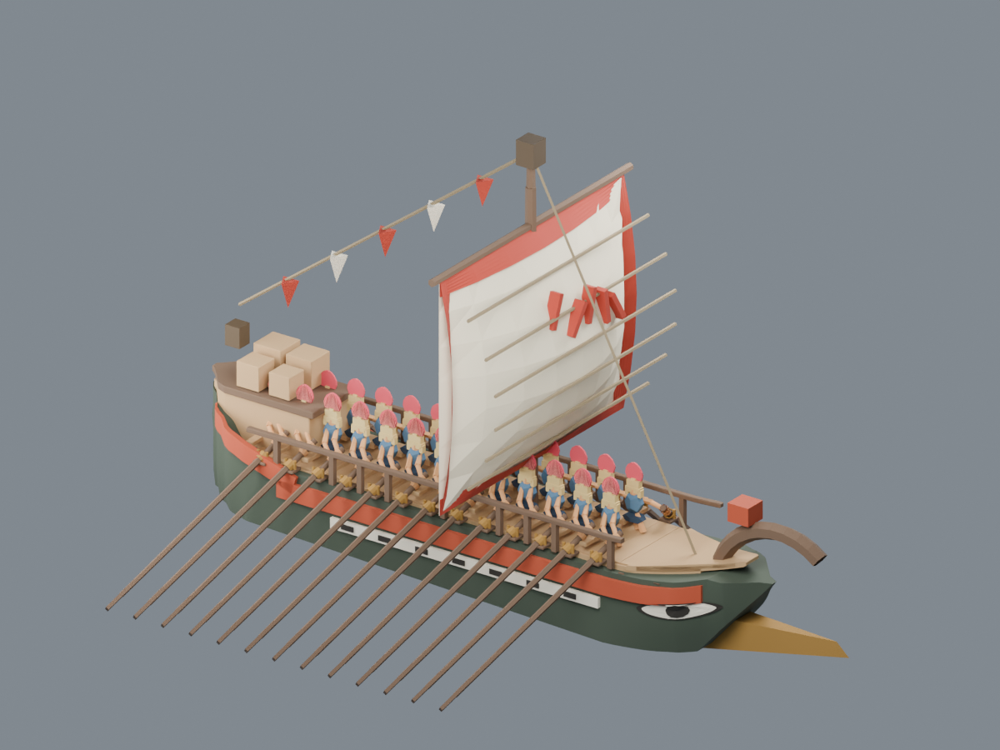
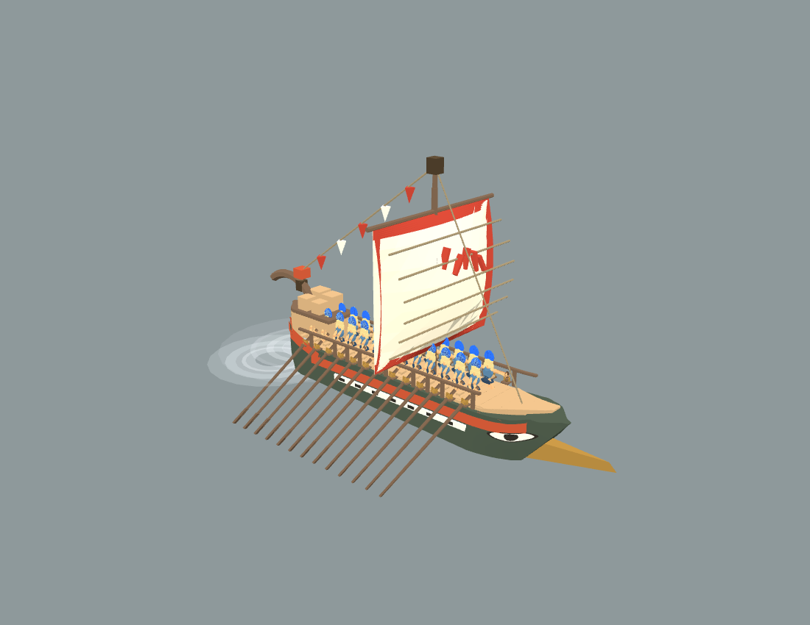
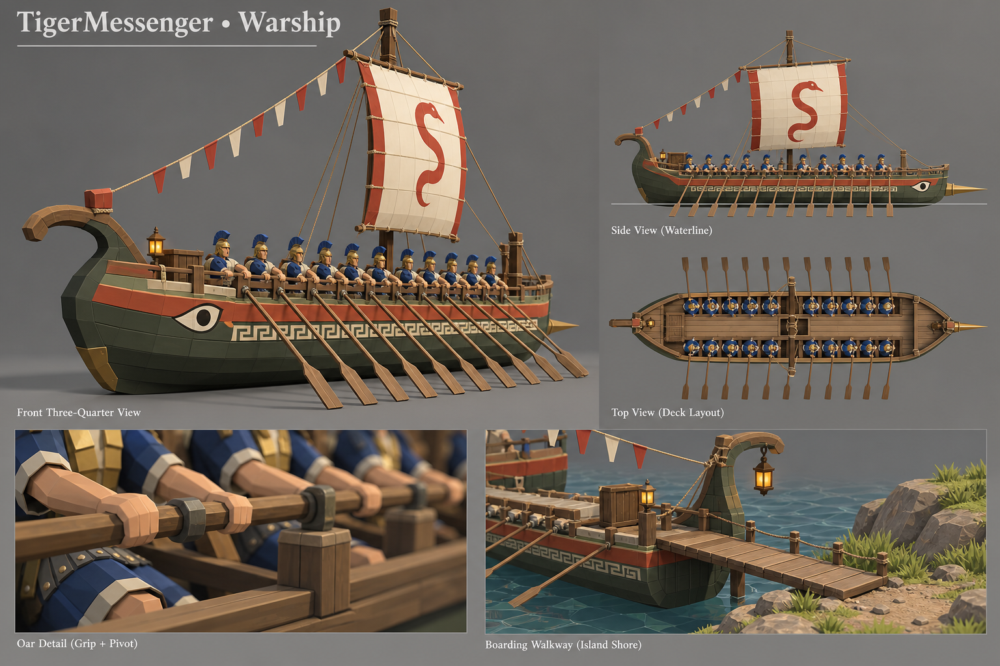
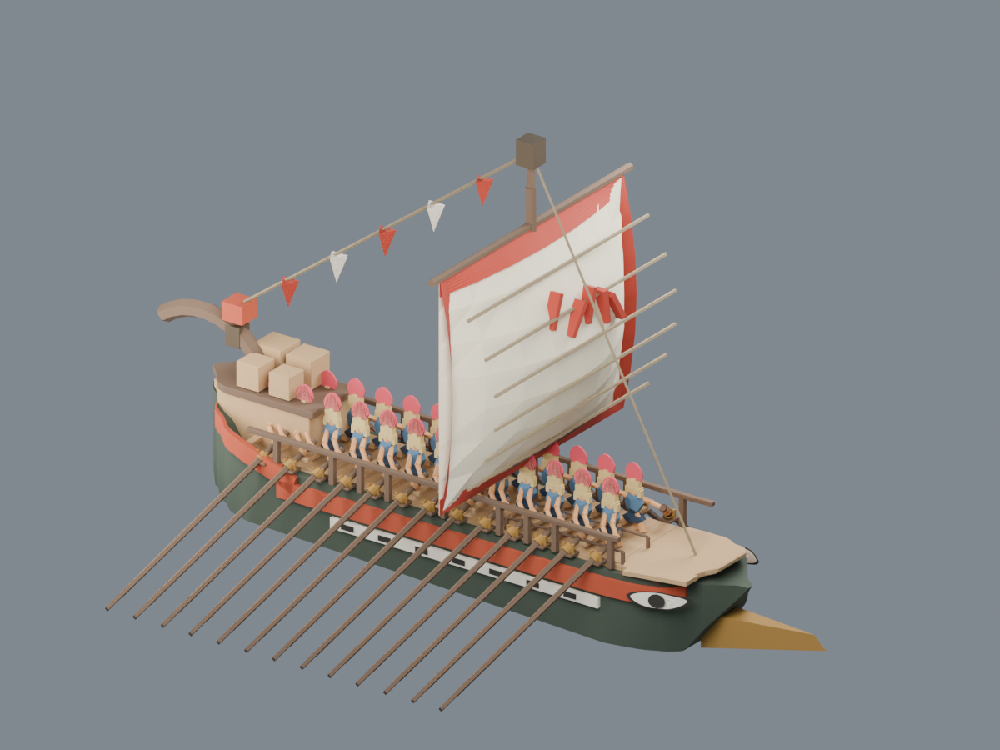
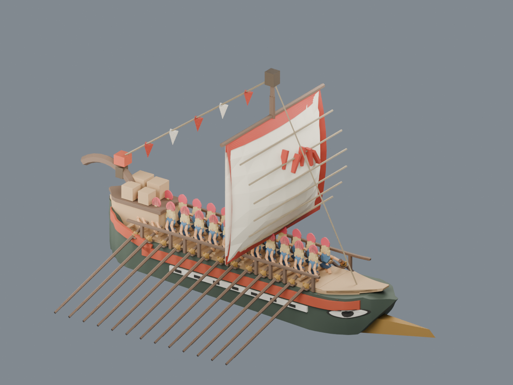
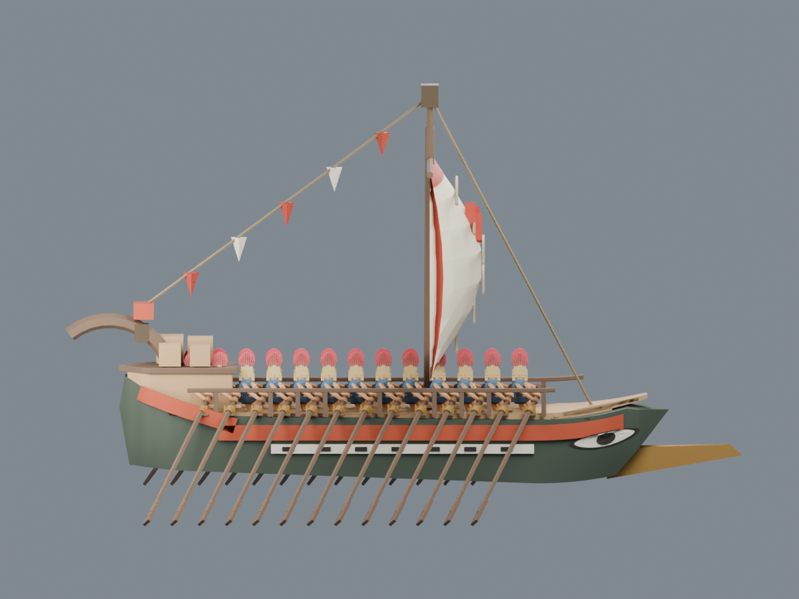
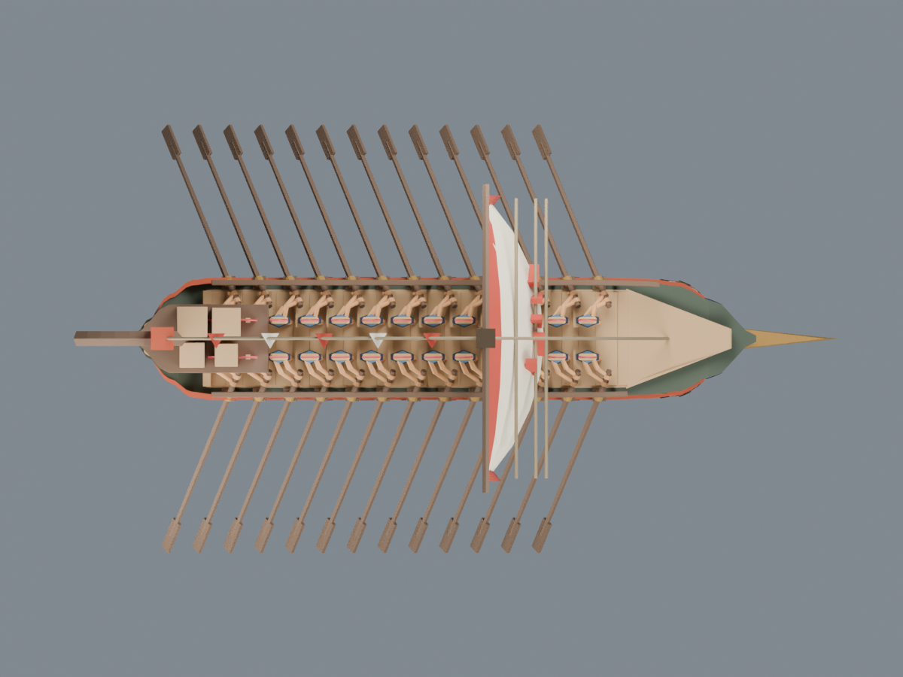

传统战船 · 船头、尾货与收纳跳板
最新：弯木与红色顶饰移到船头
按你截图指定的原装饰迁移，弧线朝船头前伸，底端接前甲板；货物仍在船尾。Blender v8 已保存并同步 Web 模型数据与 Godot 资产入口。

查看侧面
有眼睛和前伸撞角的一端统一为船头，卷尾及货物位于船尾。航行时不再竖起一块门板。下面都是保存后的 GLB 重新导入 Blender 的实拍，不是目标生图。
状态：v6 已接入 Web 的真实战船工厂及 Godot 苔庭战斗出航。桨手、划桨和红蓝缨接口已检查；网页航向修复已通过去程、返程检查，查看航向证据。跳板展开检查未通过，暂不启用自动展开；原航道浅水穿地及终点重摆仍待修复。

Web 实际公共模型工厂渲染：蓝缨、26 桨手、船尾货物。此图为独立检视灯光，非战场。 Godot 苔庭战斗正常开始后的 v6 出航。原地形遮挡仍可见，未宣称航道完成。
Godot 苔庭战斗正常开始后的 v6 出航。原地形遮挡仍可见，未宣称航道完成。Web 接口检查 · Godot 接入证据 · 跳板未过项
原目标图

原目标图不同视图的眼睛端有矛盾。本次统一以撞角一端为前进方向，保持传统战船的船身、帆、桨手与卷尾设计。

第一轮 v5：眼睛归位，船头延伸，跳板平放，船尾货物降低收拢。
第二轮 v6：前甲板继续收尖、船头上扬前伸，眼睛贴合船壳，跳板进一步下沉收纳。
第二轮侧面：右为船头／前进，左为船尾／货物。
第二轮俯视：原中段桨手与桨位保留。第二轮 Blender 文件 · 保存资产检查 · 工程说明与实际接入状态